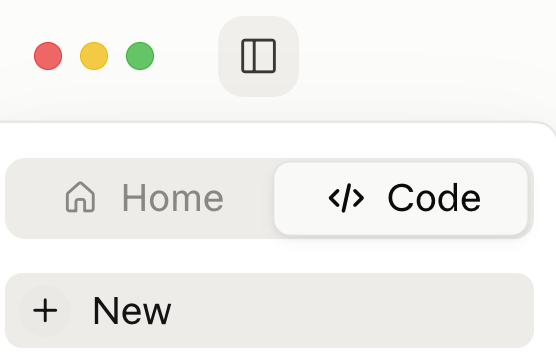
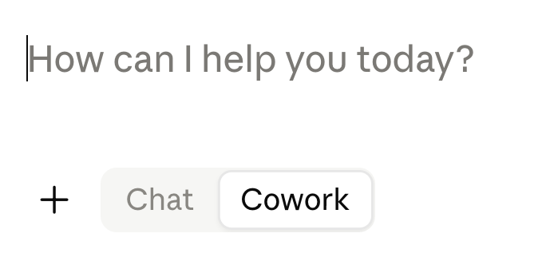
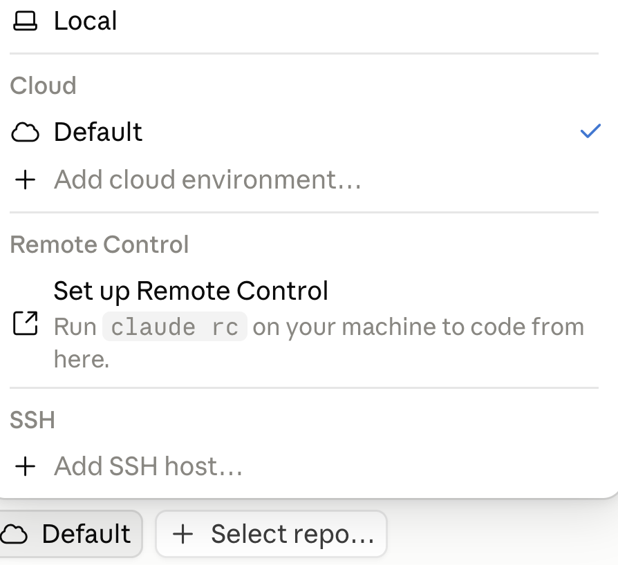
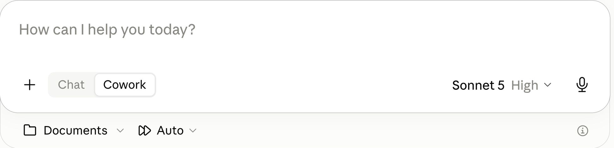
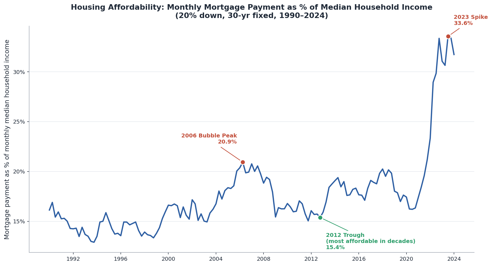

1. Intro to Claude
Faculty Workshop
Rice Business 2026
Today’s Session
1
Overview
2
Effective Prompting
3
Code and Documents
4
Verifying Things
5
Practice
Overview
A Brief History
An Agent is a Chatbot with Tools
Code Execution
↕
User
↔︎
Agent
↔︎
LLM
↕
Other Tools
Agent in More Detail

Four Modes of Claude Desktop
Home or Code?
The two halves of the app, chosen at the top of the left sidebar (the square icon toggles the sidebar)

Four Modes of Claude Desktop
Within Home, Chat or Cowork?
Toggle in the prompt box

Within Code, Local or Cloud?
Selector at the bottom of the window

What to Use?
- You can chat in any mode
- You can execute code in any mode
Cowork > Chat on many dimensions. Requires paid account.
Code Local is best for most people, but Claude Desktop is not the best venue
Use Cowork for now
(more later)
Code Cloud is GitHub integration, probably overkill
Configuration
- Create New Project + Use a Folder Give Claude access to your local files. Store project-specific instructions.
- Auto Automatically approve. Misleading name. Claude decides: safe -> don’t ask permission, possibly risky -> ask permission
- Model I recommend Sonnet 5. Capable for anything you probably want to do. Faster and cheaper (easier on token quota).

Effective Prompting
Plan Mode
Claude Desktop has an explicit Plan mode. Or add “plan how to do this before you start.”
Why It Works: Knowledge
- Planning pulls relevant knowledge into the context window
- The model answers in light of what it just retrieved, not base rates
Why It Works: Scale
- Decompose the work into subtasks
- Verify each one before the next
- Failures stay small and local
AI is a Prediction Machine, not a Rational Person
Suppose Claude has told you in the past that Method A beats Method B for some task. You ask it to do the task.
Do not assume it will use what it knows. If “A beats B” is not in the context window, and B appeared more often in its training data, it will probably use B.
This is the value of “plan before you act.” Planning surfaces “A beats B,” leading Claude to select A for the task.
Steelmanning
Don’t ask AI whether your idea is good. Ask it to make the strongest possible case that your idea is wrong.
Sycophancy: training on human feedback teaches that agreement gets high ratings. Ask “is my plan sound?” and Claude finds reasons it is.
The fix: “What is the strongest argument against this acquisition?”
One step further: have it play a skeptical board member, a regulator, a competitor.
Numbers Need Code
Never trust AI arithmetic. Have it write and run code.
The Problem
- “47.3%” is as plausible as “52.1%” to a next-token predictor
- Mental math, rankings, comparisons, aggregations — all unreliable
- Wrong numbers stated with complete confidence
The Fix
- Ask for Python, and have it run
- Arithmetic becomes computation, not prediction
- Code execution is built into every chatbot and Claude Code
What Not to Do
2022–2023 conventions are now useless or counterproductive.
Skip These
- “Think step by step” — reasoning models already do, in hidden tokens
- “Take a deep breath” — measurably useless now
- “CRITICAL! NEVER EVER…” — overtriggers, and gets worse results
Use With Care
- “You are an expert data analyst …”
- Persona stacking can improve tone and structure
- Direct task framing usually wins
Code and Documents
Example Prompt
Download three FRED (Federal Reserve Economic Data) series as CSV: mortgage rate (MORTGAGE30US), home price (MSPUS), household income (MEHOINUSA672N), 1990 through most recent.
MORTGAGE30US is weekly — resample to quarterly by averaging. MSPUS is already quarterly. MEHOINUSA672N is annual — interpolate linearly between annual observations to produce quarterly values.
Assume a 20% down payment and a 30-year loan. Compute the monthly mortgage payment on a median-priced home and express it as a percentage of monthly median household income.
Plot the affordability ratio as a line chart. Annotate three points: the 2006 bubble peak, the 2012 trough (most affordable in decades, as low rates met depressed prices), and the 2023 spike.
Result

Reading, Editing, and Writing Documents
Claude natively reads text and images, and natively writes text. Everything beyond text is handled by code.
- Document reading is doc -> text, then read
- Document creation is text (code) -> doc
- Office document editing is ‘read and write XML (Extensible Markup Language)’
Example
Get Tesla’s EPS from SEC EDGAR by quarter for the past 5 years. Plot. Create a PowerPoint deck with the plot plus discussion.
The result
Creating Excel Workbooks
Claude uses Python to create Excel workbooks, inserting numbers (inputs) and formulas cell-by-cell
Example Prompt
Build an Excel workbook containing a mortgage amortization table. Include a chart of the amount going to interest and the amount going to principal each month.
Result
Claude Plugin for Excel
A chat panel inside Excel itself. Add it from Home → Add-ins. You will be prompted to connect to your Anthropic account (paid account).
Example

Verifying Things
Verify Claims
The Problem
- Facts, regulations, dates, citations — stated the same way whether real or invented
- The more obscure the fact, the likelier it is fabricated
The Fix
- Have it search before answering
- Ask for sources. Then check them.
Verify Code
Consider a human assistant. Ask where they could have gone wrong.
- They may not have understood what you wanted.
- To perform the task, they may have had to make decisions that were different from the decisions you would have made.
- Their Excel, code, or whatever may have had subtle bugs so it did not do what they expected.
Claude can go wrong in exactly the same ways. How do you check them?
Three Checks
Take advantage of the fact that AI is perfectly patient. You can probe more deeply than you would with a human assistant, and it will not be offended.
Check its understanding
Explain to me what you did and how you did it.
Check its decisions
Report all ways in which my instructions were ambiguous and you made decisions we have not discussed.
Check its code
Show me a sample case and work through the case as if by hand so I can verify your number.
Generator-Critic
Spawn a second Claude to attack the first one’s output, not validate it. Subagents work well — several of them.
The Pattern
- Generator produces the work
- Critic gets: “Find every factual error, logical gap, and unsupported assumption. Do not summarize — find flaws.”
Why a Separate Instance?
- A model is anchored to its own output and defends it
- A fresh instance with an adversarial mandate is not
Re-Use Tested Code
Once code runs correctly, save it. Re-use it rather than rewrite it.
The Problem with Rewriting
- Different choices each time
- Scripts that should agree may not
- Old bugs reappear
Example: Data Wrangling, Charts, Documents
Some Local Data
Extract the following from session1.zip into your project folder or just put session1.zip there and tell Claude to extract.
| File | Rows | Key Columns |
|---|---|---|
| northwind_customers.xlsx | 93 | CustomerID, CompanyName, Country |
| northwind_orders.xlsx | 500 | OrderID, CustomerID, OrderDate |
| northwind_orderdetails.xlsx | 18,976 | OrderID, ProductID, UnitPrice, Quantity |
| northwind_products.xlsx | 77 | ProductID, ProductName, CategoryID |
| northwind_categories.xlsx | 8 | CategoryID, CategoryName |
Merge, Filter, Aggregate, Chart, Analyze, Create
Copy this prompt into Claude:
I have five Northwind files in my project folder: customers, orders, order details, products, and categories. Which product categories generated the most revenue from customers in Germany and France? Show only categories above $10,000, sort highest to lowest, create a bar chart, and put it in a PowerPoint deck. Add some discussion.
Takeaway
There is no secret to prompting. Just chat (a lot). Treat AI as an infinitely patient colleague with a poor memory. Code execution gives AI enormous power.
Homework
Watch the three-minute video academic_studio.mp4